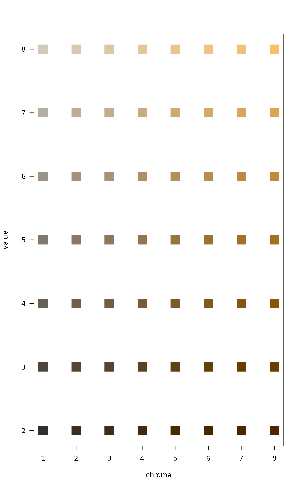
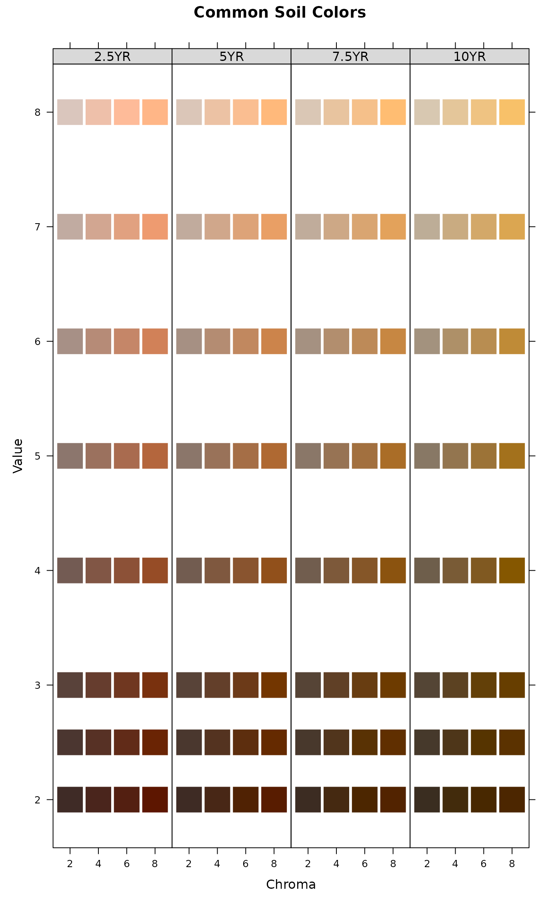
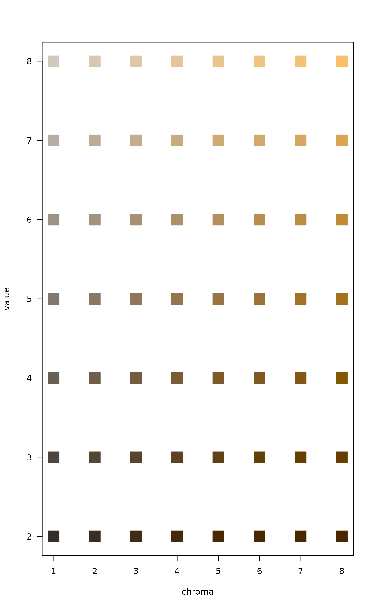
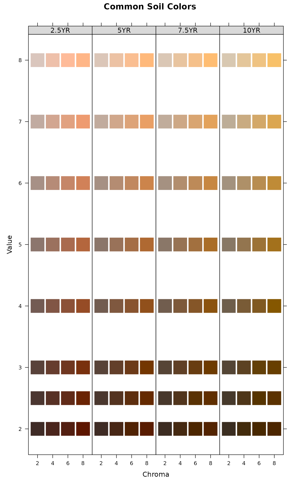

Convert Munsell Color Notation to other Color Space Coordinates (sRGB and CIELAB)
Source:R/munsell2rgb.R
munsell2rgb.RdColor conversion based on a look-up table of common soil colors.
munsell2rgb(
the_hue,
the_value,
the_chroma,
alpha = 1,
maxColorValue = 1,
return_triplets = FALSE,
returnLAB = FALSE
)Arguments
- the_hue
a vector of one or more more hues, upper-case (e.g. '10YR')
- the_value
a vector of one or more values (e.g. '4')
- the_chroma
a vector of one or more chromas (e.g. '6'), may be NA for neutral hues
- alpha
numeric, transparency setting used when
return_triplets = FALSEandreturnLAB = FALSE- maxColorValue
maximum sRGB color value, typically
1(seergb)- return_triplets
logical, return sRGB coordinates (range 0-1) instead of standard hex notation of sRGB (e.g. '#8080B')
- returnLAB
logical, return CIELAB coordinates (D65 illuminant)
Value
A vector of R colors is returned that is the same length as the input data. When return_triplets = TRUE and/or returnLAB = TRUE, then a data.frame (of sample length as input) is returned.
Details
This function is vectorized without recycling: i.e. the length of each argument must be the same. Both functions will pad output with NA if there are any NA present in the inputs.
Neutral hues are approximated by greyscale shades ranging from 20\
Gley soil colors that are missing a chroma will not be correctly interpreted. Consider using a chroma of 1.
Values of "2.5" (common in soil color descriptions) are silently truncated to "2".
Non-standard Munsell notation (e.g. '7.9YR 2.7/2.0') can be matched (nearest-neighbor, no interpolation) to the closest color within the munsell sRGB/CIELAB look-up table via getClosestMunsellChip(). A more accurate estimate of sRGB values from non-standard notation can be achieved with the munsellinterpol package.
See examples below.
Note
Care should be taken when using the resulting sRGB values; they are close to their Munsell counterparts, but will vary based on your monitor and ambient lighting conditions. Also, the value used for maxColorValue will affect the brightness of the colors. Th default value (1) will usually give acceptable results, but can be adjusted to force the colors closer to what the user thinks they should look like.
References
http://ncss-tech.github.io/AQP/ http://www.brucelindbloom.com/index.html?ColorCalcHelp.html http://www.cis.rit.edu/mcsl/online/munsell.php https://www.munsellcolourscienceforpainters.com/MunsellAndKubelkaMunkToolbox/MunsellAndKubelkaMunkToolbox.html
Examples
# neutral heues (N) map to approximate greyscale colors
# chroma may be any number or NA
g <- expand.grid(hue='N', value=2:8, chroma=NA, stringsAsFactors=FALSE)
munsell2rgb(g$hue, g$value, g$chroma)
#> [1] "#333333FF" "#4D4D4DFF" "#666666FF" "#808080FF" "#999999FF" "#B3B3B3FF"
#> [7] "#CCCCCCFF"
# basic example
d <- expand.grid(hue='10YR', value=2:8, chroma=1:8, stringsAsFactors=FALSE)
d$color <- with(d, munsell2rgb(hue, value, chroma))
# similar to the 10YR color book page
plot(value ~ chroma, data=d, col=d$color, pch=15, cex=3)
 # multiple pages of hue:
hues <- c('2.5YR','5YR','7.5YR','10YR')
d <- expand.grid(hue=hues, value=2:8, chroma=seq(2,8,by=2), stringsAsFactors=FALSE)
# convert Munsell -> sRGB
d$color <- with(d, munsell2rgb(hue, value, chroma))
# extract CIELAB coordinates
with(d, munsell2rgb(hue, value, chroma, returnLAB=TRUE))
#> L A B
#> 1 20.55436 8.803394 7.082935
#> 2 20.55897 7.404575 8.620931
#> 3 20.56333 5.749263 10.048938
#> 4 20.56675 4.027043 11.088633
#> 5 30.77683 8.884940 8.661683
#> 6 30.78129 7.402794 10.088323
#> 7 30.78488 5.942052 11.199223
#> 8 30.78856 3.912342 12.210272
#> 9 41.23454 8.283917 8.798793
#> 10 41.23956 7.047434 10.475890
#> 11 41.24347 5.786451 11.738676
#> 12 41.24855 3.681301 13.297617
#> 13 51.59454 7.243568 8.356828
#> 14 51.59928 6.215810 9.916265
#> 15 51.60314 5.041770 11.129231
#> 16 51.60822 3.237340 12.698800
#> 17 61.69922 7.068858 8.505653
#> 18 61.70415 5.997236 10.102962
#> 19 61.70852 4.815368 11.485405
#> 20 61.71385 2.895996 13.088811
#> 21 71.61412 6.488547 8.042293
#> 22 71.61977 5.636351 9.928776
#> 23 71.62480 4.418365 11.531168
#> 24 71.63044 2.508053 13.229712
#> 25 81.36368 5.616144 7.308386
#> 26 81.37052 4.989911 9.656613
#> 27 81.37637 3.857152 11.564500
#> 28 81.38258 2.071502 13.487861
#> 29 20.56344 16.814418 14.488582
#> 30 20.57184 14.087101 18.201899
#> 31 20.57891 10.923147 21.406386
#> 32 20.58452 7.928173 23.958709
#> 33 30.78889 16.325118 16.933367
#> 34 30.79580 13.548688 19.547895
#> 35 30.80201 10.730243 21.982404
#> 36 30.80768 7.357185 24.027225
#> 37 41.24892 15.875656 17.613264
#> 38 41.25710 13.452854 20.845839
#> 39 41.26403 10.868898 23.591401
#> 40 41.27066 7.377786 25.999460
#> 41 51.60995 14.379406 16.918987
#> 42 51.61858 12.057575 20.148385
#> 43 51.62525 9.878406 22.663772
#> 44 51.63296 6.610847 25.480428
#> 45 61.71555 13.715724 17.028442
#> 46 61.72377 11.550079 19.982060
#> 47 61.73075 9.329138 22.491219
#> 48 61.73915 5.777720 25.372727
#> 49 71.63198 13.252265 16.950165
#> 50 71.64089 11.083260 20.102345
#> 51 71.64852 8.829089 22.803962
#> 52 71.65754 5.287237 25.868885
#> 53 81.38522 13.198219 17.685890
#> 54 81.39402 10.732652 20.649496
#> 55 81.40177 7.993182 23.189093
#> 56 81.41025 4.587754 25.953475
#> 57 20.56911 24.025340 22.305215
#> 58 20.58071 20.154633 28.579510
#> 59 20.65437 16.026757 29.909286
#> 60 20.72129 12.093562 29.790002
#> 61 30.79796 23.396662 26.027158
#> 62 30.80674 19.311423 30.215390
#> 63 30.81408 14.944396 33.703268
#> 64 30.82068 10.480848 37.016404
#> 65 41.25969 22.387417 26.284949
#> 66 41.26934 18.736944 30.686421
#> 67 41.27724 14.986399 34.346508
#> 68 41.28482 10.371457 37.715427
#> 69 51.62348 21.454130 26.339365
#> 70 51.63431 18.064255 31.110545
#> 71 51.64277 14.640636 34.876154
#> 72 51.65181 9.949994 38.814033
#> 73 61.72975 20.653822 26.129186
#> 74 61.74123 17.206122 30.852072
#> 75 61.74994 13.673301 34.361262
#> 76 61.75969 9.068116 38.346467
#> 77 71.64771 20.162113 26.320138
#> 78 71.65925 16.625141 30.792995
#> 79 71.66887 12.965722 34.519813
#> 80 71.67921 8.090569 38.448737
#> 81 81.40098 19.830452 26.729819
#> 82 81.41250 16.145531 30.970364
#> 83 81.42235 12.381807 34.598236
#> 84 81.43302 7.395373 38.445564
#> 85 20.57257 31.921980 30.642205
#> 86 20.74440 26.958096 30.631558
#> 87 20.84986 20.445454 30.389480
#> 88 20.90081 15.465119 30.183041
#> 89 30.80405 29.586042 35.965865
#> 90 30.82143 24.050580 41.566873
#> 91 30.89446 18.678009 41.171563
#> 92 30.95077 13.630955 40.806708
#> 93 41.26804 28.722474 35.806881
#> 94 41.27823 23.570544 41.040893
#> 95 41.28692 18.369699 45.792198
#> 96 41.29905 12.776881 49.524120
#> 97 51.63422 28.276539 36.322483
#> 98 51.64596 23.473327 42.230939
#> 99 51.65521 18.547743 46.905417
#> 100 51.66414 12.641607 51.309637
#> 101 61.74098 27.103511 35.136947
#> 102 61.75451 22.583574 41.614907
#> 103 61.76468 17.761040 46.355121
#> 104 61.77496 11.832154 51.154958
#> 105 71.66031 26.546995 35.435454
#> 106 71.67345 21.653928 40.984009
#> 107 71.68472 16.799512 45.947830
#> 108 71.69579 10.875236 50.760979
#> 109 79.89559 21.412031 34.482215
#> 110 80.55378 18.479357 41.439973
#> 111 81.27596 15.902619 46.764165
#> 112 81.45209 10.188997 51.368057
# plot: note that we are setting panel order from red --> yellow
library(lattice)
xyplot(value ~ factor(chroma) | factor(hue, levels=hues),
main="Common Soil Colors", layout=c(4,1), scales=list(alternating=1),
strip=strip.custom(bg=grey(0.85)),
data=d, as.table=TRUE, subscripts=TRUE, xlab='Chroma', ylab='Value',
panel=function(x, y, subscripts, ...)
{
panel.xyplot(x, y, pch=15, cex=4, col=d$color[subscripts])
}
)

# soils example
data(sp1)
# convert colors
sp1$soil_color <- with(sp1, munsell2rgb(hue, value, chroma))
# simple plot, may need to tweak gamma-correction...
image(matrix(1:nrow(sp1)), axes=FALSE, col=sp1$soil_color, main='Soil Colors')

# convert into a more useful color space
# you will need the colorspace package for this to work
if(require(colorspace)) {
# keep RGB triplets from conversion
sp1.rgb <- with(sp1, munsell2rgb(hue, value, chroma, return_triplets=TRUE))
# convert into LAB color space
sp1.lab <- as(with(sp1.rgb, sRGB(r,g,b)), 'LAB')
plot(sp1.lab)
}
#> Loading required package: colorspace
# multiple pages of hue:
hues <- c('2.5YR','5YR','7.5YR','10YR')
d <- expand.grid(hue=hues, value=2:8, chroma=seq(2,8,by=2), stringsAsFactors=FALSE)
# convert Munsell -> sRGB
d$color <- with(d, munsell2rgb(hue, value, chroma))
# extract CIELAB coordinates
with(d, munsell2rgb(hue, value, chroma, returnLAB=TRUE))
#> L A B
#> 1 20.55436 8.803394 7.082935
#> 2 20.55897 7.404575 8.620931
#> 3 20.56333 5.749263 10.048938
#> 4 20.56675 4.027043 11.088633
#> 5 30.77683 8.884940 8.661683
#> 6 30.78129 7.402794 10.088323
#> 7 30.78488 5.942052 11.199223
#> 8 30.78856 3.912342 12.210272
#> 9 41.23454 8.283917 8.798793
#> 10 41.23956 7.047434 10.475890
#> 11 41.24347 5.786451 11.738676
#> 12 41.24855 3.681301 13.297617
#> 13 51.59454 7.243568 8.356828
#> 14 51.59928 6.215810 9.916265
#> 15 51.60314 5.041770 11.129231
#> 16 51.60822 3.237340 12.698800
#> 17 61.69922 7.068858 8.505653
#> 18 61.70415 5.997236 10.102962
#> 19 61.70852 4.815368 11.485405
#> 20 61.71385 2.895996 13.088811
#> 21 71.61412 6.488547 8.042293
#> 22 71.61977 5.636351 9.928776
#> 23 71.62480 4.418365 11.531168
#> 24 71.63044 2.508053 13.229712
#> 25 81.36368 5.616144 7.308386
#> 26 81.37052 4.989911 9.656613
#> 27 81.37637 3.857152 11.564500
#> 28 81.38258 2.071502 13.487861
#> 29 20.56344 16.814418 14.488582
#> 30 20.57184 14.087101 18.201899
#> 31 20.57891 10.923147 21.406386
#> 32 20.58452 7.928173 23.958709
#> 33 30.78889 16.325118 16.933367
#> 34 30.79580 13.548688 19.547895
#> 35 30.80201 10.730243 21.982404
#> 36 30.80768 7.357185 24.027225
#> 37 41.24892 15.875656 17.613264
#> 38 41.25710 13.452854 20.845839
#> 39 41.26403 10.868898 23.591401
#> 40 41.27066 7.377786 25.999460
#> 41 51.60995 14.379406 16.918987
#> 42 51.61858 12.057575 20.148385
#> 43 51.62525 9.878406 22.663772
#> 44 51.63296 6.610847 25.480428
#> 45 61.71555 13.715724 17.028442
#> 46 61.72377 11.550079 19.982060
#> 47 61.73075 9.329138 22.491219
#> 48 61.73915 5.777720 25.372727
#> 49 71.63198 13.252265 16.950165
#> 50 71.64089 11.083260 20.102345
#> 51 71.64852 8.829089 22.803962
#> 52 71.65754 5.287237 25.868885
#> 53 81.38522 13.198219 17.685890
#> 54 81.39402 10.732652 20.649496
#> 55 81.40177 7.993182 23.189093
#> 56 81.41025 4.587754 25.953475
#> 57 20.56911 24.025340 22.305215
#> 58 20.58071 20.154633 28.579510
#> 59 20.65437 16.026757 29.909286
#> 60 20.72129 12.093562 29.790002
#> 61 30.79796 23.396662 26.027158
#> 62 30.80674 19.311423 30.215390
#> 63 30.81408 14.944396 33.703268
#> 64 30.82068 10.480848 37.016404
#> 65 41.25969 22.387417 26.284949
#> 66 41.26934 18.736944 30.686421
#> 67 41.27724 14.986399 34.346508
#> 68 41.28482 10.371457 37.715427
#> 69 51.62348 21.454130 26.339365
#> 70 51.63431 18.064255 31.110545
#> 71 51.64277 14.640636 34.876154
#> 72 51.65181 9.949994 38.814033
#> 73 61.72975 20.653822 26.129186
#> 74 61.74123 17.206122 30.852072
#> 75 61.74994 13.673301 34.361262
#> 76 61.75969 9.068116 38.346467
#> 77 71.64771 20.162113 26.320138
#> 78 71.65925 16.625141 30.792995
#> 79 71.66887 12.965722 34.519813
#> 80 71.67921 8.090569 38.448737
#> 81 81.40098 19.830452 26.729819
#> 82 81.41250 16.145531 30.970364
#> 83 81.42235 12.381807 34.598236
#> 84 81.43302 7.395373 38.445564
#> 85 20.57257 31.921980 30.642205
#> 86 20.74440 26.958096 30.631558
#> 87 20.84986 20.445454 30.389480
#> 88 20.90081 15.465119 30.183041
#> 89 30.80405 29.586042 35.965865
#> 90 30.82143 24.050580 41.566873
#> 91 30.89446 18.678009 41.171563
#> 92 30.95077 13.630955 40.806708
#> 93 41.26804 28.722474 35.806881
#> 94 41.27823 23.570544 41.040893
#> 95 41.28692 18.369699 45.792198
#> 96 41.29905 12.776881 49.524120
#> 97 51.63422 28.276539 36.322483
#> 98 51.64596 23.473327 42.230939
#> 99 51.65521 18.547743 46.905417
#> 100 51.66414 12.641607 51.309637
#> 101 61.74098 27.103511 35.136947
#> 102 61.75451 22.583574 41.614907
#> 103 61.76468 17.761040 46.355121
#> 104 61.77496 11.832154 51.154958
#> 105 71.66031 26.546995 35.435454
#> 106 71.67345 21.653928 40.984009
#> 107 71.68472 16.799512 45.947830
#> 108 71.69579 10.875236 50.760979
#> 109 79.89559 21.412031 34.482215
#> 110 80.55378 18.479357 41.439973
#> 111 81.27596 15.902619 46.764165
#> 112 81.45209 10.188997 51.368057
# plot: note that we are setting panel order from red --> yellow
library(lattice)
xyplot(value ~ factor(chroma) | factor(hue, levels=hues),
main="Common Soil Colors", layout=c(4,1), scales=list(alternating=1),
strip=strip.custom(bg=grey(0.85)),
data=d, as.table=TRUE, subscripts=TRUE, xlab='Chroma', ylab='Value',
panel=function(x, y, subscripts, ...)
{
panel.xyplot(x, y, pch=15, cex=4, col=d$color[subscripts])
}
)

# soils example
data(sp1)
# convert colors
sp1$soil_color <- with(sp1, munsell2rgb(hue, value, chroma))
# simple plot, may need to tweak gamma-correction...
image(matrix(1:nrow(sp1)), axes=FALSE, col=sp1$soil_color, main='Soil Colors')

# convert into a more useful color space
# you will need the colorspace package for this to work
if(require(colorspace)) {
# keep RGB triplets from conversion
sp1.rgb <- with(sp1, munsell2rgb(hue, value, chroma, return_triplets=TRUE))
# convert into LAB color space
sp1.lab <- as(with(sp1.rgb, sRGB(r,g,b)), 'LAB')
plot(sp1.lab)
}
#> Loading required package: colorspace
 # convert a non-standard color to closest "chip" in `munsell` look-up table
getClosestMunsellChip('7.9YR 2.7/2.0', convertColors = FALSE)
#> [1] "7.5YR 3/2"
# convert directly to R color
getClosestMunsellChip('7.9YR 2.7/2.0')
#> [1] "#584537FF"
# convert a non-standard color to closest "chip" in `munsell` look-up table
getClosestMunsellChip('7.9YR 2.7/2.0', convertColors = FALSE)
#> [1] "7.5YR 3/2"
# convert directly to R color
getClosestMunsellChip('7.9YR 2.7/2.0')
#> [1] "#584537FF"